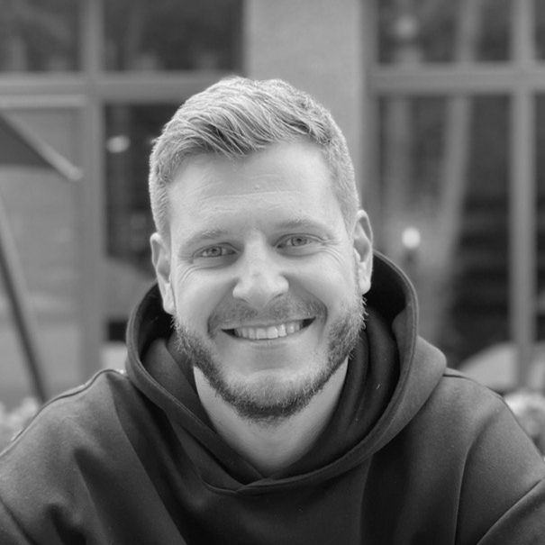
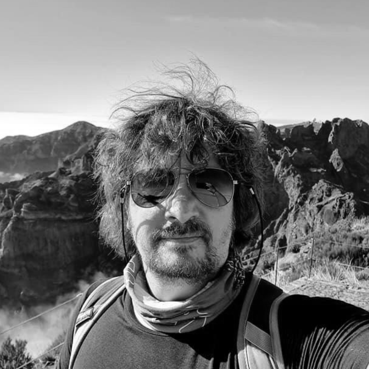
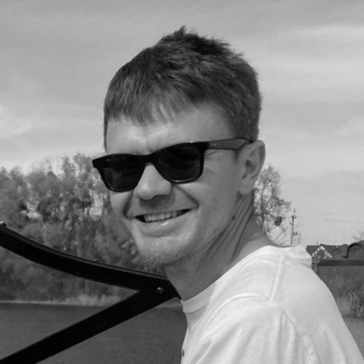
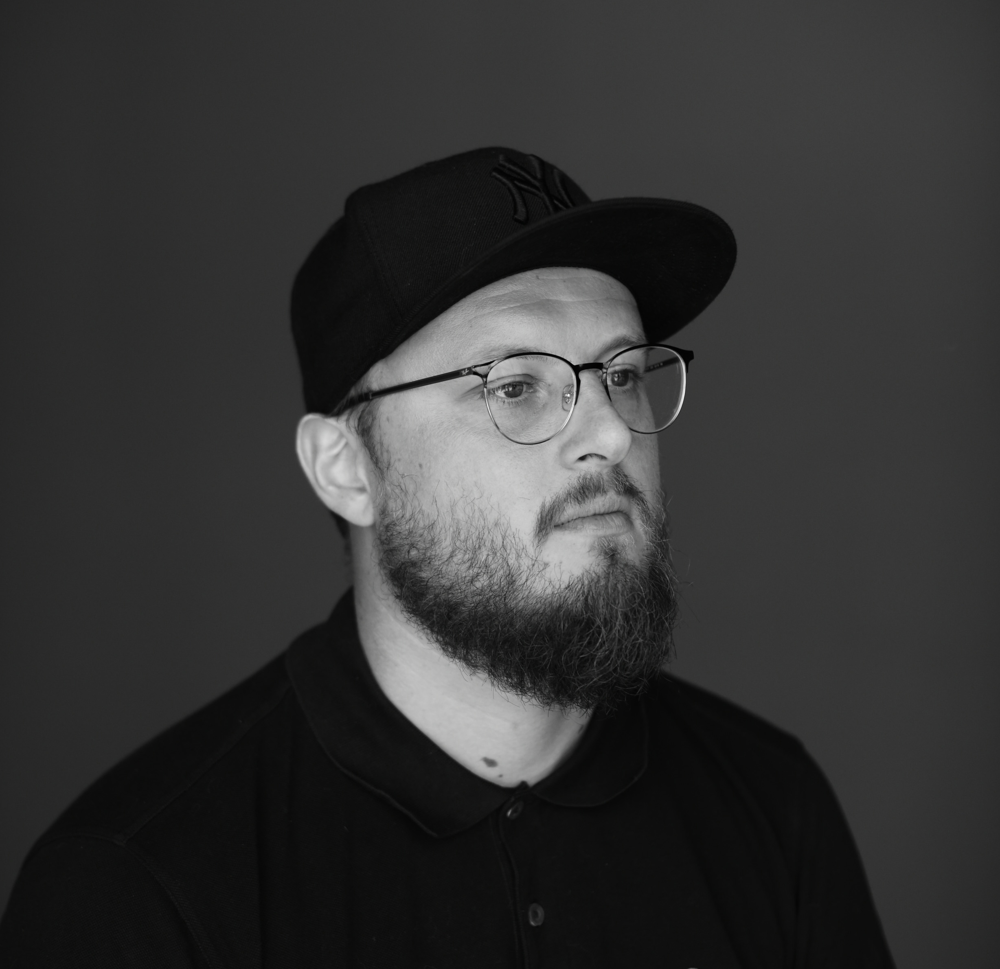

Авто:Mitsubisi L200
Кому:Поліція
Куди:Київська Область
Звідки:Латвія
Ціна:4000 Евро
Для чого:Виконувати оперативні задачі на лінії окупації.
Кому ми допомогли
Авто не приїздять порожні, тут альбом з гуманітаркою, яку ми доставили
Допомогти нам
Мені потрібне авто
посилання перекине вас на бота для замовлення
AUTOBAT — волонтерський рух. наша місія підвищувати мобільність військових на передовій.
В нашому ДНК любов та експертиза в автомобілях, оскільки засновники — професійні гонщики з України та Європи. Ми збираємо гроші, шукаємо, оглядаємо, купуємо, ремонтуємо авто. Переважну більшість машин знаходимо та ремонтуємо за кордоном, оскільки там нижчі ціни та доступні деталі. Готові автомобілі ми доставляємо до найзручнішої для бійців точки.

Ілля Порохнавець — з 2009 року будує та ремонтує спортивні авто. Займався дріфтингом. У 2020 почав реставрувати вінтажні авто. Один з не багатьох в Україні, хто знає як реставрувати роторні двигуни.

Лауринас Кентра — байкер, член команди Red Hogs MC, учасник раллі Литовського чемпіонату з 2007 по 2010 рік. Мріє взяти участь у раллі Дакар, та піднятись на Еверест, але після перемоги України.

Олег Круглов — у мирному житті більш полюбляв кермо швидкісного катера або літака. Але з перших днів війни почав доставляти на фронт автівки та рації, адже і ІТ спеціалізацію ніхто не скасовував.

Руслан Гордієнко — консультує бізнеси, державні органи та НГО. В AUTOBAT відповідає за комунікації. Не дочекався свого першого авто 7 днів, бо приперлись кляті москалі.
Ми стрімко розвиваємось, тому завжди у пошуку нових волонтерів та партнерів.
Волонтери:
Водії (я можу возити авто по Україні)
Скаути (я можу оглядати авто в Європі)
Заповнити анкетуМи вдячні
- Сергій Пунда
- Александр Погорілий
- Денис Васильєв
- Наталя Волхова
- Антон Бесчасний
- Диана Ставська
- Станіслав Галан
- Денис Мацак
- Олена Бойко